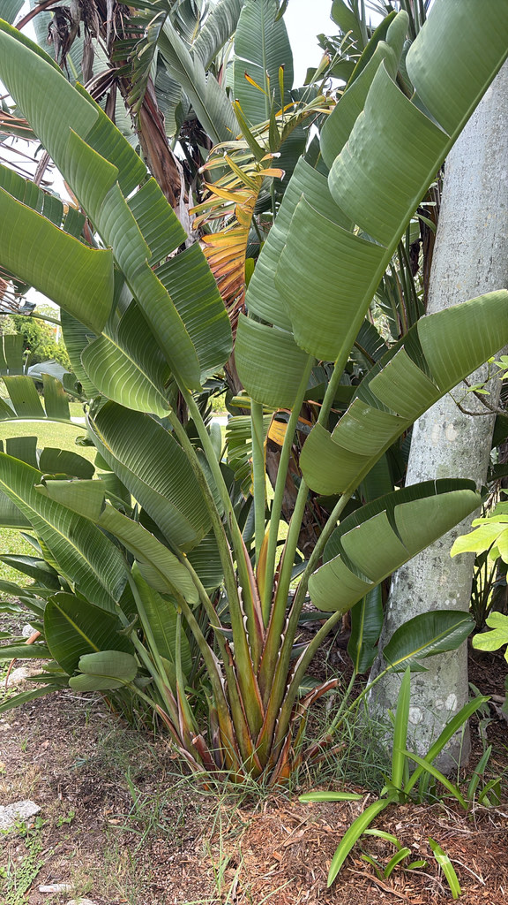

- This plant contains bilirubin — a pigment normally found only in animals, produced when red blood cells break down. It is one of the very few plants on earth verified to contain it.
- Named for both British and Russian royalty simultaneously: the genus honors Queen Charlotte of England; the species honors the son of Czar Nicholas I of Russia.
- Its rise to indoor plant stardom traces directly to a 1970s Architectural Digest shoot of Halston's New York apartment — the plant came from a nursery in Homestead, Florida.
- The flower is shaped and colored like a bird in flight — white crest, blue tongue, emerging from a deep purple-black spathe.
Native to coastal forests, dune thickets, and forest edges of eastern South Africa, from the Eastern Cape and KwaZulu-Natal northward into southern Mozambique, Botswana, and Zimbabwe. Grows naturally in evergreen forest margins and along watercourses.
- The story of how this plant became an interior design icon is almost too good. In the late 1970s, Architectural Digest photographed the New York apartment of fashion designer Halston, overlooking Central Park. The styling team needed something dramatically tropical.
- They sourced a White Bird of Paradise from a nursery in Homestead, Florida — and the magazine spread launched the plant into houseplant stardom that has never faded. One Florida plant, one photoshoot, five decades of indoor plant trends.
- The bilirubin discovery is genuinely strange. Bilirubin is the orange-yellow compound produced in mammals when hemoglobin breaks down — it's what makes bruises turn yellow and gives jaundice its color. Finding it in a plant was so unexpected that the research was initially met with skepticism. It's been confirmed.
- The genus Strelitzia honors Queen Charlotte of England (from the house of Mecklenburg-Strelitz), while the species name nicolai honors Nikolai Nikolaievich, son of Czar Nicholas I of Russia. A South African plant named for both a British queen and Russian nobility — taxonomy has always been international.
- Its close relative, the Traveller's Palm, grows just steps away in this collection. The leaf architecture is unmistakably from the same family.
In its native South Africa, the White Bird of Paradise is an important nectar source for sunbirds — the ecological equivalent of hummingbirds in the Americas. The flower's structure, with nectar pooled deep inside the blue tongue, is built for perching birds that depress the tongue as they feed and get dusted with pollen. In Florida, hummingbirds and large bees are the primary visitors.
The seeds are wrapped in a tuft of bright orange fiber that birds eat, dispersing the seeds while discarding the toxic seed coat. The broad clumping structure provides excellent cover and nesting habitat for birds and lizards.
Takes 3 to 5 years to reach maturity and begin flowering when grown from seed. Once established, produces new leaves and flower stalks throughout its life. Propagation by division of clumps or seed.
White sepals and a blue-purple tongue emerging from a dark purple-black spathe — up to 20 inches long. The overall form closely resembles an exotic bird in flight. Blooms throughout the year with a peak in spring and summer.
Woody capsules containing seeds wrapped in tufts of bright orange fiber.
Enormous, paddle-shaped, grey-green, up to 6 feet long on stout petioles. Arranged in a fan-like formation at the top of the stems — similar to the Traveller's Palm nearby, but in a clumping multi-stemmed form rather than a single plane.
Erect, woody, clumping — can reach 20 to 30 feet at maturity outdoors.
The flower is the showpiece — white and deep blue emerging from a dark spathe, unmistakably bird-like. The leaves are enormous and grey-green, fanning from a clumping base. Compare the leaf form with the Traveller's Palm nearby — same family, clearly different architecture. Look for orange fiber attached to mature seeds in open capsules.
This plant is mildly toxic — the orange seed fibers and other parts can cause mild nausea and skin irritation if chewed or eaten. Keep children and pets from chewing the leaves.
The ASPCA lists Strelitzia as toxic to dogs; the seeds and fruit can cause mild nausea, drooling, and drowsiness.
The leaves aren't eaten, though they were traditionally used for roofing and food wrapping.


- © Randall Carter (CC-BY-NC), via iNaturalist
- © Denise Sosa (CC-BY-NC), via iNaturalist